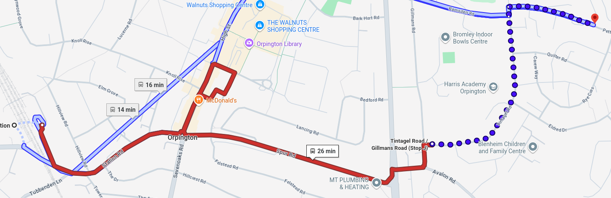
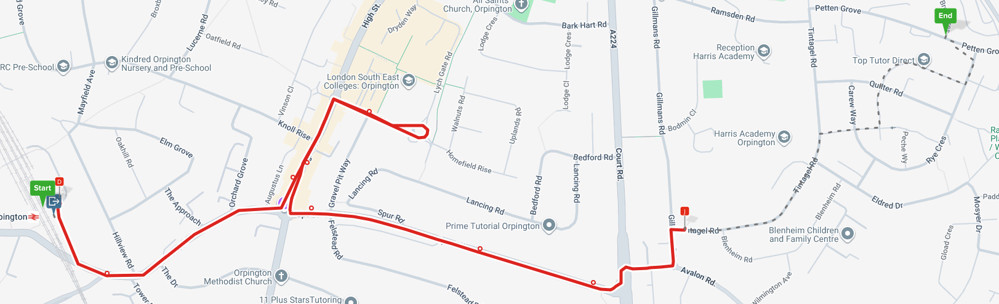
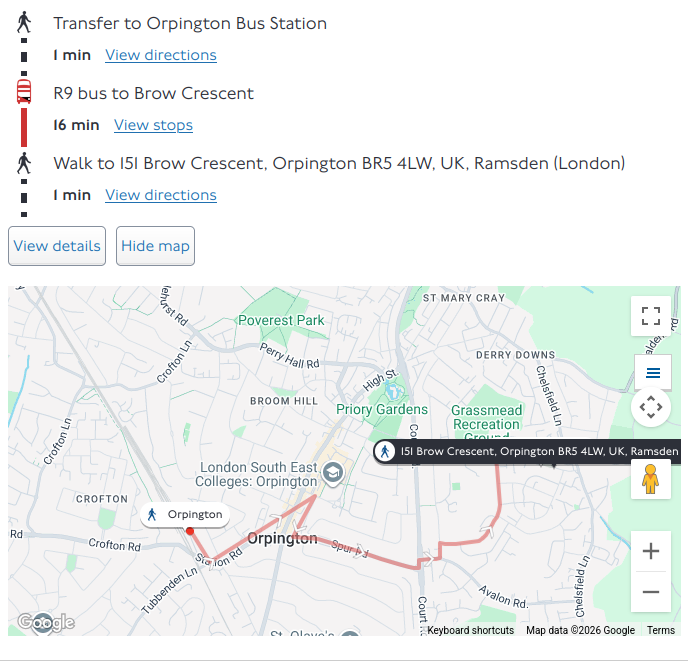
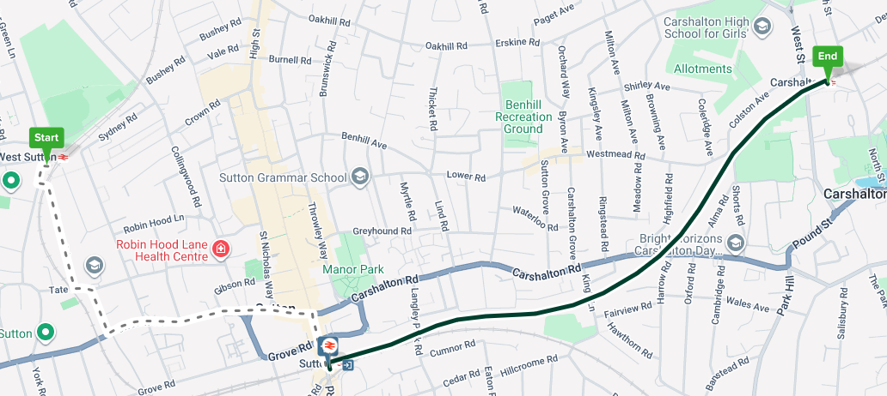
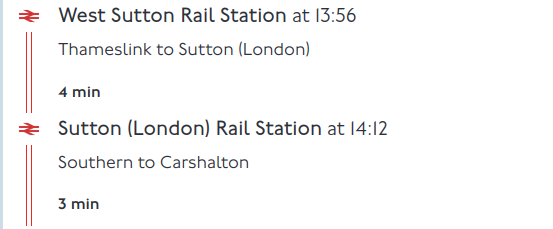
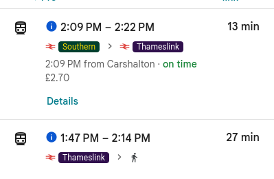
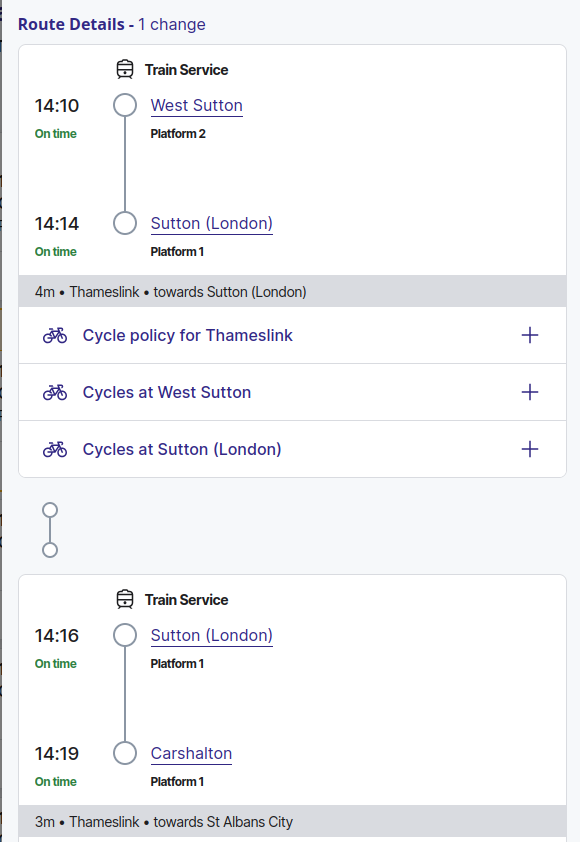

If you look at a Bus Map of Orpington, South London, the R7 and R9 are "loopy":
Google maps mostly suggests other routes, and the R9 route includes an unncessary walk:

Citymapper same thing:

TFL Journey Planner gets it 🥳:

There is also a Sutton loop line railway:
Citymapper has more walking:

TFL wants you to change train:

Google wants you to change train or walk:

National rail says change train, but it's the same train, so it's the better, but could do with a note:
